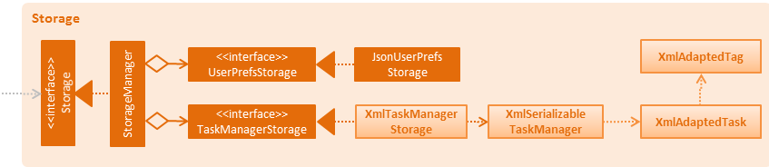

Figure 2.1.1 : Architecture Diagram
By: T01-T4 Since: Jun 2017 License: MIT
JDK 1.8.0_131 or later
Having any Java 8 version is not enough.
This app will not work with earlier versions of Java 8.
Eclipse IDE
e(fx)clipse plugin for Eclipse (Do the steps 2 onwards given in this page)
Buildship Gradle Integration plugin from the Eclipse Marketplace
Checkstyle Plug-in plugin from the Eclipse Marketplace
File > Import Gradle > Gradle Project > Next > Next Browse, then locate the project's directoryFinish
- If you are asked whether to 'keep' or 'overwrite' config files, choose to 'keep'.
- Depending on your connection speed and server load, it can even take up to 30 minutes for the set up to finish (This is because Gradle downloads library files from servers during the project set up process)
- If Eclipse auto-changed any settings files during the import process, you can discard those changes.
Project -> Properties -> Checkstyle -> Local Check Configurations -> New... External Configuration File under Type config/checkstyle/checkstyle.xml Main tab, use the newly imported check configuration.files from packages, click Change..., and select the resources packageNote to click on the
files from packagestext after ticking in order to enable theChange...button
Problem: Eclipse reports compile errors after new commits are pulled from Git
Gradle -> Refresh Gradle Project.Problem: Eclipse reports some required libraries missing
Author: {To be added} {To be added}
Figure 2.1.1 : Architecture Diagram
The Architecture Diagram given above explains the high-level design of the App. Given below is a quick overview of each component.
Tip: The
.pptxfiles used to create diagrams in this document can be found in the diagrams folder. To update a diagram, modify the diagram in the pptx file, select the objects of the diagram, and chooseSave as picture.
Main has only one class called MainApp. It is responsible for,
[Commons] represents a collection of classes used by multiple other components. Two of those classes play important roles at the architecture level.
EventsCenter : This class (written using Google's Event Bus library) is used by components to communicate with other components using events (i.e. a form of Event Driven design)LogsCenter : Used by many classes to write log messages to the App's log file.The rest of the App consists of four components.
UI] : The UI of the App.Logic] : The command executor.Model]: Holds the data of the App in-memory.Storage] : Reads data from, and writes data to, the hard disk.Each of the four components
interface with the same name as the Component.{Component Name}Manager class.For example, the Logic component (see the class diagram given below) defines it's API in the Logic.java interface and exposes its functionality using the LogicManager.java class.

Figure 2.1.2 : Class Diagram of the Logic Component
The Sequence Diagram below shows how the components interact for the scenario where the user issues the command delete 1.
Figure 2.1.3a : Component interactions for delete 1 command (part 1)
Note how the
Modelsimply raises aTaskManagerChangedEventwhen the Task Manager data are changed, instead of asking theStorageto save the updates to the hard disk.
The diagram below shows how the EventsCenter reacts to that event, which eventually results in the updates being saved to the hard disk and the status bar of the UI being updated to reflect the 'Last Updated' time.

Figure 2.1.3b : Component interactions for delete 1 command (part 2)
Note how the event is propagated through the
EventsCenterto theStorageandUIwithoutModelhaving to be coupled to either of them. This is an example of how this Event Driven approach helps us reduce direct coupling between components.
The sections below give more details of each component.
Author: {To be added}

Figure 2.2.1 : Structure of the UI Component
API : Ui.java
The UI consists of a MainWindow that is made up of parts e.g.CommandBox, ResultDisplay, EventListPanel, StatusBarFooter etc. All these, including the MainWindow, inherit from the abstract UiPart class.
The UI component uses JavaFx UI framework. The layout of these UI parts are defined in matching .fxml files that are in the src/main/resources/view folder.
For example, the layout of the MainWindow is specified in MainWindow.fxml
The UI component,
Logic component.Model so that the UI can auto-update when data in the Model change.Author: {To be added}
Figure 2.3.1 : Structure of the Logic Component
API : Logic.java
Logic uses the Parser class to parse the user command.Command object which is executed by the LogicManager.Model (e.g. adding a task) and/or raise events.CommandResult object which is passed back to the Ui.Given below is the Sequence Diagram for interactions within the Logic component for the execute("delete 1") API call.

Figure 2.3.1 : Interactions Inside the Logic Component for the delete 1 Command
Author: {To be added}

Figure 2.4.1 : Structure of the Model Component
API : Model.java
The Model,
UserPref object that represents the user's preferences.UnmodifiableObservableList<BasicTaskFeatures> that can be 'observed' e.g. the UI can be bound to this list so that the UI automatically updates when the data in the list change.Author: {To be added}

Figure 2.5.1 : Structure of the Storage Component
API : Storage.java
The Storage component,
UserPref objects in json format and read it back.Classes used by multiple components are in the seedu.addressbook.commons package.
We are using java.util.logging package for logging. The LogsCenter class is used to manage the logging levels and logging destinations.
logLevel setting in the configuration file (See [Configuration])Logger for a class can be obtained using LogsCenter.getLogger(Class) which will log messages according to the specified logging levelConsole and to a .log file.Logging Levels
SEVERE : Critical problem detected which may possibly cause the termination of the applicationWARNING : Can continue, but with cautionINFO : Information showing the noteworthy actions by the AppFINE : Details that is not usually noteworthy but may be useful in debugging e.g. print the actual list instead of just its sizeCertain properties of the application can be controlled (e.g App name, logging level) through the configuration file (default: config.json):
Tests can be found in the ./src/test/java folder.
In Eclipse:
src/test/java folder and choose Run as > JUnit Test Using Gradle:
We have two types of tests:
GUI Tests - These are System Tests that test the entire App by simulating user actions on the GUI. These are in the guitests package.
Non-GUI Tests - These are tests not involving the GUI. They include,
seedu.address.commons.UrlUtilTest seedu.address.storage.StorageManagerTest seedu.address.logic.LogicManagerTest Thanks to the TestFX library we use, our GUI tests can be run in the headless mode. In the headless mode, GUI tests do not show up on the screen. That means the developer can do other things on the Computer while the tests are running.
See UsingGradle.md to learn how to run tests in headless mode.
Problem: Tests fail because NullPointException when AssertionError is expected
See UsingGradle.md to learn how to use Gradle for build automation.
We use Travis CI and AppVeyor to perform Continuous Integration on our projects. See UsingTravis.md and UsingAppVeyor.md for more details.
See UsingGithubPages.md to learn how to use GitHub Pages to publish documentation to the project site.
Here are the steps to create a new release.
v0.1 We use Google Chrome for converting documentation to PDF format, as Chrome's PDF engine preserves hyperlinks used in webpages.
Here are the steps to convert the project documentation files to PDF format.
https://<your-username-or-organization-name>.github.io/addressbook-level4/docs/UserGuide.html.Print option in Chrome's menu.Save as PDF, then click Save to save a copy of the file in PDF format. 
A project often depends on third-party libraries. For example, Task Manager depends on the Jackson library for XML parsing. Managing these dependencies can be automated using Gradle. For example, Gradle can download the dependencies automatically, which is better than these alternatives.
a. Include those libraries in the repo (this bloats the repo size)
b. Require developers to download those libraries manually (this creates extra work for developers)
Priorities: High (must have) - * * *, Medium (nice to have) - * *, Low (unlikely to have) - *
| Priority | As a ... | I want to ... | So that I can... |
|---|---|---|---|
* * * |
new user | see command instructions | refer to instructions when I forget how to use the App |
* * * |
user | create a new task | |
* * * |
user | delete an existing task | no longer keep track of tasks I do not care about |
* * * |
user | search a task by name or by tag | locate task without having to go through the entire list |
* * * |
user | view all task in a particular time | |
* * * |
user | undo a recent action | remove my mistakes |
* * * |
user | add priority marks to a task | know which tasks require more attention |
* * * |
user | list my completed tasks | review details of previous tasks |
* * * |
user | specify a storage folder | know where my data will be saved |
* * * |
user | see conflicts in events | resolve them earlier |
* * |
user | set periodic reminders | automatically be reminded about recurring events |
* * |
user | see the calendar on command | check out the dates |
* * |
advanced user | use shortcut commands | utilize the app faster |
* * |
user | color code my tasks | differentiate the tasks easier |
* * |
user | sync my tasks with Google calendar | check them on Google platform |
* * |
user | enable/disable notifications | |
* |
user | share notes with others | keep tasks updated among a group of people |
* |
user | share my schedule | let others know my occupied and unoccupied timeslots |
(For all use cases below, the System is the WhatsNext and the Actor is the user, unless specified otherwise)
MSS
Extensions
2a. There is already a event task during that time period.
2a1. System will tag the overlapping events with reserved tag
OVERLAP
Use case ends
MSS
Extensions
2a. The list is empty
Use case ends
2b. There is no task with the given names or tags
Use case ends
3a. The given index is invalid
3a1. System shows an error message
Use case resumes at step 2
MSS
Extensions
2a. The list is empty
Use case ends
2b. The given query word is not found
2b1. System shows an "not found" message
Use case ends
MSS
Extensions
2a. The list is empty
Use case ends
3a. The given index is invalid
3a1. System shows an error message
Use case resumes at step 2
MSS
Extensions
2a. There is no previous action done.
2a1. System shows a "No actions to undo" message
Use case ends
MSS
Extensions
2a. The list is empty
Use case ends
MSS
Extensions
2a. The list is empty
Use case ends
3a. The given edit format is invalid
3a1. System shows an error message
Use case resumes at step 2
MSS
Extensions
3a. The new file path is invalid.
3a1. System display error message
Use case resumes at step 2
MSS
1.8.0.131 or higher installed.{More to be added}
Windows, Linux, Unix, OS-X
System defined tags that cannot be modified and deleted. E.g.
HIGH= high priority task tag;MEDIUM= medium priority task tag;LOW= low priority task tag;OVERLAP= to indicate events having clashing schedules.
Tasks that have a date, both starting and ending time. Overlapping events are allowed, but will be tagged by the system as
OVERLAPto warn users.
Tasks that have a date, but may have an ending time. If the ending time is not specified by the user, it will be set to 2359 by default. There are can be multiple deadlines at the same time.
Tasks that do not have a particular time frame.
{More to be added}
Product Name: Google Keep
Author: Sheng Jie
Pros:
Cons:
Product Name: ToDoist
Author: Sheng Jie
Pros:
Cons:
Product Name: Apple Calendar
Author: Shicheng
Pros:
Cons:
Product Name: Trello
Author: Chi Shien
Pros:
Cons:
Product Name: HiTask
Author: Aung Swumm
Pros:
Cons:
Product Name: Google Calendar
Author: Dao Han
Pros:
Cons: